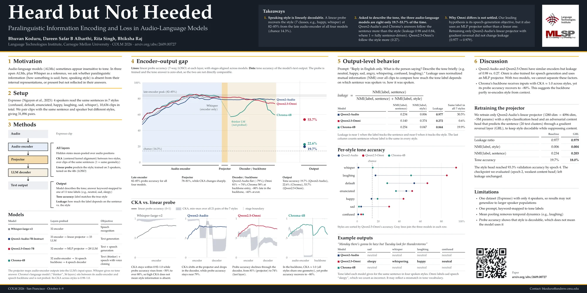

Takeaways
-
Speaking style is linearly decodable.
A linear probe recovers the speaking style (7 classes, e.g. happy, whisper) at 82–85% from the late audio encoder of all four models. Chance is 14.3%.
-
Asked to describe the tone, the models are right only 19.7–53.7% of the time.
Qwen2-Audio's and Chroma's answers follow the sentence more than the style (leakage 0.98 and 0.84, where 1 means fully sentence-driven). Qwen2.5-Omni's follow the style more (0.27).
-
Why Omni differs is not settled.
Our leading hypothesis is its speech-generation objective, but it also uses an MLP projector rather than a linear one. Retraining only Qwen2-Audio's linear projector with gradient reversal did not change leakage (0.977 → 0.979).
Listen
One speaker reads the same sentence in four styles. Pick a style to hear it, then see what each model said when asked to describe the tone.
Expresso · speaker ex01
“Monday, there's gonna be haze, but Tuesday, look for thunderstorms.”
Spoken as whisper
Qwen2-Audio
neutral
Qwen2.5-Omni
whispering
Chroma-4B
neutral
Model answers are the paper's example outputs (poster, section 5), keyword-mapped to one of 11 tone labels. Prompt: “Reply in English only. What is the person saying? Describe the tone briefly.” Audio: Expresso (Nguyen et al., 2023), CC BY-NC 4.0.
Encoded vs. said
Every model carries the speaking style through its audio encoder. What reaches the answer is a different story.
Figure 1
Speaking-style accuracy: probe vs. the model's own answer
- Probe at the audio-encoder peak
- Probe at the last layer
- The model's own answer
Seven speaking styles; chance is 14.3%. The probe is trained while the answer is zero-shot, so the two aren't directly comparable: the gap shows style is decodable, not that the model uses it. Whisper-large-v2 has no language model to answer with and is omitted.
| Model | Probe, audio-encoder peak | Probe, last layer | Model's own answer |
|---|---|---|---|
| Qwen2-Audio | 82.0% | 78.7% | 19.7% |
| Qwen2.5-Omni | 85.3% | 73.6% | 53.7% |
| Chroma-4B | 85.3% | 59.5% | 22.6% |
By speaking style
Omni does best on acoustically extreme styles like whisper and laughing. Qwen2-Audio does best on clarity styles (default, enunciated). Subtle styles like sad and confused defeat all three.
Figure 2
Tone accuracy per speaking style
- Qwen2-Audio
- Qwen2.5-Omni
- Chroma-4B
Open-ended prompting; chance is 14.3%. Styles are sorted by Qwen2.5-Omni's accuracy, and the grey line spans the three models in each row. From Table 2 of the paper.
| Style | Qwen2-Audio | Qwen2.5-Omni | Chroma-4B |
|---|---|---|---|
| whisper | 1.18% | 93.94% | 14.76% |
| laughing | 17.40% | 85.11% | 51.16% |
| default | 54.17% | 66.64% | 28.56% |
| enunciated | 46.64% | 52.21% | 36.84% |
| happy | 13.60% | 43.95% | 19.35% |
| sad | 3.75% | 30.35% | 1.71% |
| confused | 0.99% | 3.75% | 5.59% |
Sentence or style?
When a model does name a tone, what drives the label: the words, or how they were spoken? Leakage compares how much the label depends on the sentence against how much it depends on the style, using normalized mutual information (NMI) over all clips. It is near 1 when the label tracks the sentence and near 0 when it tracks the style.
| Model | NMI (label, sentence) | NMI (label, style) | Leakage | Same label in all 7 styles |
|---|---|---|---|---|
| Qwen2-Audio | 0.234 | 0.006 | 0.977 | 30.5% |
| Qwen2.5-Omni | 0.140 | 0.374 | 0.272 | 0.6% |
| Chroma-4B | 0.254 | 0.047 | 0.844 | 19.9% |
The last column counts sentences whose label is the same in every style.
Layer by layer
Representational similarity (CKA) between pairs of speaking styles shows where the models separate styles and where they collapse them.
Figure 3 · Figure 5 in the paper
How speaking styles separate, layer by layer


CKA similarity by layer for all 21 pairs of speaking styles, one line per pair; lower means the two styles are represented more differently. The red dashed line marks the projector boundary. Whisper keeps every pair geometrically similar. All three audio-language models separate styles in the late encoder, and Chroma collapses every style difference at the backbone boundary (layer 32), yet its probe accuracy recovers to about 80% later in the backbone.
Poster
Presented at CoLM 2026 in San Francisco. Tap to open the full-resolution PDF.

Citation
@inproceedings{koduru2026heard,
title = {Heard but Not Heeded: Paralinguistic Information
Encoding and Loss in Audio-Language Models},
author = {Koduru, Bhuvan and Alharthi, Dareen Safar B and
Singh, Rita and Raj, Bhiksha},
booktitle = {Conference on Language Modeling (COLM)},
year = {2026},
url = {https://arxiv.org/abs/2609.00727}
}